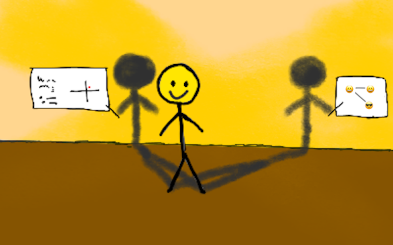
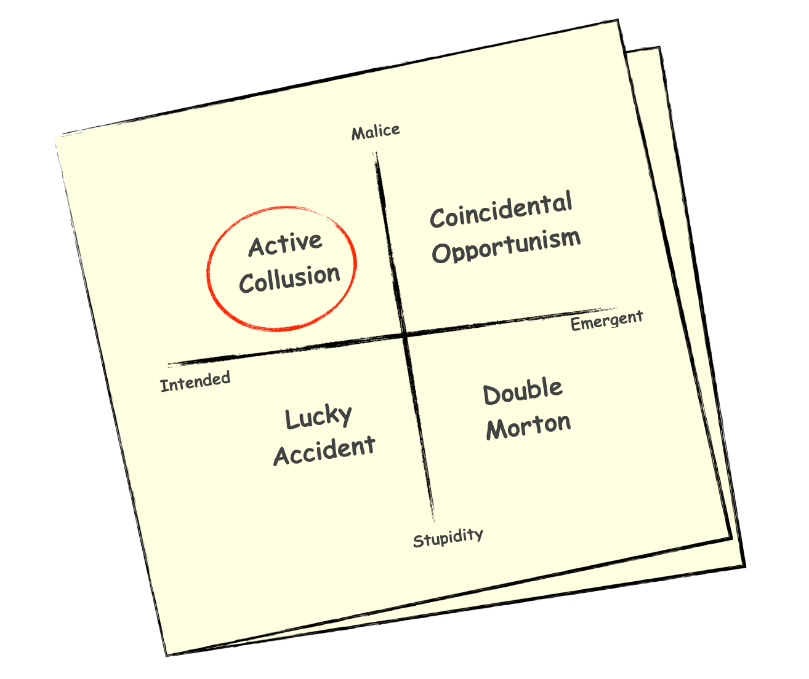

The Two Shadows of the Hero
In the People[1] school of consulting, clients are the heroes, and consultants are the shadows[2]. This is not an assessment of virtues and psyches, but a model of default roles within the narrative structure of any interesting consulting gig. And while heroes may have a thousand faces, they only have two shadows.

As a consultant, you will be cast in one of the two available shadow roles, depending on whether you add value based on what you know, or based on who you know. While both are ways of injecting new knowledge into a situation[3], one is a direct way, while the other is an indirect way, and you’ll find out very quickly, via your first few gigs, which way you mostly lean.
And if you don’t like being a shadow? Well, that’s when you end up with a Positioning school shtick instead. We’ll talk about that another day. Today we talk about shadows.
Let me tell you a little story from my case files to illustrate the know somebody, or know something dichotomy of shadows within the People school, and how the two shadow types operate.
One of the things that might happen to you, once you gain some experience in indie consulting and the gig economy, is that you might be called upon by the FBI’s G-Crimes division (which was formed in the late 90s) to assist in an investigation where your expertise is relevant. It is always good to help them out if you can, even when they cannot pay and you have to write it off as pro bono work.
I had just helped wrap up one such case, a singular affair that the G-Crimes division had internally labeled the Bermuda Triangle case. I can’t share real names and details, but it involved two executives A and B, at rival big companies, colluding via an indie consultant C, based in the Caribbean, to put a small startup D (which had been threatening to disrupt both the big companies) out of business.
It had ended grimly, with A committing suicide by PowerPoint in a train wreck of a board meeting, and B being canceled on social media. They deserved it perhaps, but it was still grim. Startup D, fortunately, survived the affair with just a few bruises, and is now well on its way to becoming the new unicorn on its block. But it could easily have died if the G-Crimes division hadn’t intervened, with a little help from me.
Agents Jane Jopp and Guy Lestrode of the G-Crimes division were buying me a drink to celebrate our closing the case, and debrief a bit. With them was a third agent I hadn’t met before. An old, almost elderly man, with an almost-retired look about him. But something about his alert eyes suggested he was very much a live player[4], still in the game.
Jopp said, “This is Agent Q, he’s with a different three-letter agency. He asked to join us, and he might want to run something by you later.”
Agent Q waved his arm graciously, “That can wait. I’m curious to hear about the Bermuda Triangle case first hand. The whole IC is talking about it.”
I bowed, not to be out-gracioused, “Any enigmatic, spooky friend of Jopp’s is an enigmatic, spooky friend of mine.”
As we were sitting down in our booth, I spotted my long-time indie-consulting evil twin, Guanxi Gao[5], at the far end of the bar, speaking inaudibly into his phone. I waved at him. He nodded and held up a finger to indicate he’d be right over.
“Ah, looks like coincidentally, I have an enigmatic, spooky friend of my own to introduce,” I said.
Gao finished his call and sauntered over. He nodded at the three agents and motioned cheers with his drink.
“Jopp, Lestrode, Agent Q, meet my evil twin Guanxi Gao. He and I go way back; we’ve been collaborating and stealing gigs from each other for years. I believe I mentioned him to you last week Lestrode?”
Lestrode nodded. “Yes, you said he gave you the lead that helped us crack the case I think? Nice to meet you Mr. Gao.”
Gao nodded, “That Bermuda Triangle case? How did that work out?”
“Messily, but it could have been a lot messier. Thanks for your help on that one Gao, I owe you one, as do Agents Jopp and Lestrode here.”
Gao smiled, and started to say something, when his phone rang.
He glanced at it, and said, “Sorry, I have to take this. Nice meeting you, Agents.”
He nodded and sauntered off again towards the far end of the bar.
Jopp looked at the retreating figure. “He’s your friend? Doesn’t seem like your type. Looks like one of those bagman operator types. Not an idea guy.”
I’ll say this for Agent Jane Jopp. She may be lacking in imagination, but she has an uncanny ability to read people within seconds. Twenty years in the G-Crimes division, and she still can’t quite get inside the heads of us gig economy types — which is why she calls me in when she needs to get inside consultant heads — but she’s acquired a certain savant-like ability to thin-slice and classify us with scary speed and accuracy. Hers is a mind that indexes people like a search engine.
I said, “Bagman operator is exactly right. They call him 6% Gao in indie consulting circles. He’s as religious about only working for a percentage as I am about only working by the hour. Usually 6%. He says 6 is lucky.”
Lestrode perked up, “In China, 6 is 六, which sounds like 流, which means flow. It’s considered lucky.”
Young Lestrode is full of surprises. A Very Online younger Millennial nerd in his late twenties, exactly the right foil for Jopp, who is very much old-school in her ways. They make a good team. Agents like Young Lestrode are the future of gig economy law enforcement I think.
“Well, Gao’s certainly all about making things flow smoothly wherever he goes. He’s always miraculously in the right place at the right time, positioned to nudge things along in just the right way. Interesting coincidences and serendipitous meetings seem to just happen around him. For a 6% cut.”
“And is it a coincidence that he’s here at the same time we are?” asked Jopp.
I grinned and held up my drink, “Let’s just say I owe him 6% of a drink.”
Lestrode said, “To get back to the Bermuda Triangle case, I’ve been meaning to ask you. How did you guess A and B would have a hidden connection via our friendly Caribbean rogue consultant C?”
I set my drink on the table, steepled my fingers, leaned back, and closed my eyes, “You know my methods Lestrode, apply them.”
Lestrode is an energetic learner, always game for such prompts. He leaned forward in his armchair, elbows on knees, and stared down at the carpet, frowning.
“Well, you make up a 2x2, and when you’ve eliminated 3 of the quadrants, the 4th, however improbable, is the right one.”
Jopp winked at me, and smiled indulgently at Lestrode.
I said, “That is indeed my primary method. You’ve been watching and learning, I see Lestrode. Do go on.”
“Well…in this case, from the outset, the two obvious questions were: was the course of events across the three companies actually intended by anybody, or an emergent effect, and, were people behaving maliciously or stupidly?”
“Malice vs. Stupidity; Intended effects vs. Emergent effects, a very promising 2x2,” I said, encouragingly, taking a sip of my absinthe.
“And if we’d gone by priors, we would have concluded it was just an unfortunate — for the startup D that is — spot of emergent stupidity. No premeditation, no crime. Two dumb big companies acting in ways that accidentally almost killed a smart, promising startup that was threatening to disrupt both of them at once.”
Agent Q spoke for the first time, “Ah, a Double Morton effect[6]. Interesting.”
I gave Agent Q a long, curious, appraising look, but could read nothing in his face. What sort of agent knew about esoterica like the Double Morton effect? He looked at me and gave me an enigmatic smile. Why was he at this meeting, I wondered. Well, I’d find out soon enough. I set the thought aside.
Lestrode said, “Is that some sort of technical term for emergent stupidity? But yeah, that’s what we thought it was at first. G-Crimes got called in because all three companies hire a lot of the same gig workers below the API, and we thought some low-level organized grift might be going on in the ecosystem, but then Agent Jopp noticed that two executives at the two big companies had been unusually well-positioned to personally benefit from what happened. In eerily similar ways too. That’s when we called in Rao, and started looking for above-the-API shenanigans at the C-suite level.”
I smiled, “I’m curious to see where you take this 2x2, go on Lestrode.”
“Here, lemme sketch it out,” said Lestrode. He grabbed a cocktail napkin and scribbled for a minute.

“Okay, so two unrelated executives in different companies making bank the same way suggested it wasn’t… a Double Morton, at least not primarily. On the other hand, it didn’t seem like a lucky accident because there wasn’t really much luck involved. And it couldn’t have been coincidental opportunism either, because both A and B made identical non-obvious trades to exploit the situation. So that left intended malice. But we had to prove active collusion, and to do that we had to find the connection between them.”
I beamed at Lestrode and nodded at Jopp, “Excellent hindsight analysis Lestrode! Jopp, you have a very promising understudy here. I predict an illustrious career in G-Crimes for Young Lestrode here.”
“So is that how you figured it out?” asked Lestrode, looking at me expectantly.
Jopp and Agent Q turned to look at me as well.
“Not even close, but that would have been a good way to proceed if there had been no other options. It might even have gotten us somewhere non-random. In fact, I’m going to take that napkin with the 2x2 if you don’t mind.”
I pocketed the napkin. Just because an answer is the wrong one for a given situation doesn’t mean it might not be the right one for a future situation. And as a consultant, you never pass up an idea in 2x2 form, no matter who it is from, or where you find it.
“We can call it the Lestrode 2x2,” I added graciously. It never hurts to liberally give credit where due, while you’re busy pocketing useful ideas for later.
Lestrode said, “So how did you figure out then? What 2x2 did you use?”
“What makes you think I used a 2x2 at all?”
“Well…” Lestrode trailed off uncertainly.
“It’s my shtick? We’ll have to have a little chat about shticks at some point Lestrode, just the two of us. But no, in this particular case, it wasn’t a 2x2 that did the trick.”
“So what did you do?”
“I made a call to my friend Guanxi Gao over there, and asked if he knew the two executives and any connection between them. He pointed me to our friendly Caribbean consultant, C. Who, as we now know, played a bit of creative chess postman, and took a cut from both ends.”
Lestrode looked deeply disappointed, “That’s it? That’s all? You just got the actual answer from somebody? You didn’t apply your Gervais Principle[7] theories and do some deep abductive reasoning?”
I smiled and said, “In consulting, Lestrode, there are two ways to solve a problem; you either know somebody, or you know something, and when you’re mainly a know-something guy like me, you should always cultivate know-somebody people, because knowing somebody is nearly always a faster route to the right answer. When you’ve exhausted your rolodex of everybody who might actually know something, whatever remains, however messy, must be actually thought about. With or without 2x2s.”
“And Gao is a know-somebody consultant?”
“Precisely. He has a vast global network of contacts. He knows everybody, and never makes up an idea if he can make a phone call instead. I’ve never seen him draw a 2x2, but he can keep making phone calls long after I’m out of 2x2s.”
Lestrode didn’t seem impressed. “Huh. Not much of a networker, he didn’t say much to us. I’d have thought any consultant would be eager for a line in to G-Crimes.”
“Oh trust me, he networked exactly as much as he intended to. And he isn’t here by accident. I mentioned I’d be debriefing here with you guys, and I was 90% sure he’d swing by to check you out.”
“How come he didn’t try to chat us up more, or give us his card? Isn’t that what you guys do, hand out cards to everybody you meet?”
Jopp interrupted, “You’re thinking like a graduate student on LinkedIn, Agent Lestrode. What Mr. Rao is saying is that our new acquaintance Mr. Gao is no ordinary networker. He’s an operator. A pick-up artist among indie consultants. A market maker in the interstices of the gig economy.”
I nodded, “Precisely.”
“I’ve run into many like him over the years,” Jopp continued. “Build trust everywhere, know who has what available to sell, and when, who is in the market for what. Make the right connections at the right times.”
She turned to me, “So he’s good, huh?”
“Among the best,” I said. “And he’s only going to get better playing both sides of the US-China trade cold war too. Someone to watch.”
All three agents turned to look thoughtfully at Gao, still on his phone at the other end of the bar, his head down, mostly listening, occasionally saying something inaudibly.
“Now that you’re on his radar,” I said, “you’ll run into him at least twice more in different situations relatively quickly; and he’ll say more and listen more each time. By the third meeting, it will seem like you’ve always known and trusted him.”
“And do you trust him?” asked Jopp.
“Like me, he chooses interestingness over money[8]. So yeah, I trust him. Up to a point. As much as one can trust an evil twin. I wasn’t kidding about that.”
“What happens after the third meeting?” asked Lestrode.
“Well one day, maybe at the fourth meeting, or maybe at the tenth, when you meet him, you’ll realize you want something from him. And he will make it happen, for 6%. But right now, he’s in no hurry to deepen the connection. He’s just checking you out…” I turned to look at Agent Q, “…like your associate Agent Q has been checking me out for the last half hour.”
Agent Q smiled, “Well, yes, I’ve certainly been doing that. Agent Jopp told me you were generally a good person to get to know in the gig economy, and I can see why she thinks that now. But as it happens, if we’re done discussing the Bermuda Triangle case, I do have something I want to run by you right now, and it can’t wait till our fourth serendipitous meeting.”
He pulled up a photograph on a tablet, and slide it across the table towards me.
“Do you recognize this object?”
It was a photograph of a Yak coin[9].
I smiled.
“I suppose there’s a rare third way to solve a problem in consulting, besides knowing somebody and knowing something.”
Agent Q raised his eyebrows questioningly.
I pulled out my wallet, carefully extracted my own Yak coin, and put it down on the table next to Agent Q’s tablet.
“You can have something to show,” I said.
Agent Q looked at me quietly.
“Told you he’d know something,” said Jane Jopp smugly. Lately, she’s been taking a sort of patronizing, proprietary attitude towards me, showing me off like a performing pet. It’s an occupational hazard of being a know-something consultant. I don’t mind though.
Lestrode frowned and leaned forward, “What’s that? Some sort of ancient rare coin?”
A voice spoke up from the shadows behind our little group. It was Gao, he’d finished his call and rejoined us unnoticed. How long had been listening, I wondered. That’s the thing with Gao. He’s a sort of deus ex machina haunting the gig economy in a lurking, invisible way. You don’t see or hear him until he decides he wants to be seen and heard.
“Yak coins. Not particularly rare. I’ve got a few myself. Didn’t know you had one Rao.” Gao stepped forward, bending down to look at my coin.
He straightened up, and pointed at the tablet, “The one in the photograph is a fake though.”
Agent Q looked at both of us speculatively.
“Well, well, well. Looks like I need to have a chat with both you gentlemen. Perhaps I could buy you both a drink if our friends from G-Crimes are done here?”
Jopp and Lestrode rose together, and put on their jackets.
Jopp said, “Yep, we’re done. Thanks again for your help with the Bermuda Case, Mr. Rao, nice to meet you Mr. Gao. We’ll leave you to chat with Agent Q here. See you around.”
“Thanks for the drink.”
They nodded and left. Gao hesitated for a moment, checked his phone, then seemed to come to a decision. He shrugged, and sat down,
“I guess I have time for another drink,” he said.
Agent Q motioned to the waiter for another round of drinks.
I picked up and pocketed my Yak coin, and slid the tablet back towards Agent Q.
“Well Agent Q,” I said, “In my experience Gao can be trusted in such matters, so what are you doing with a photograph of a fake Yak coin, and how can we help you?”
- People — index.html
- shadows — the_shadow_s_journey.html
- injecting new knowledge into a situation — index.html
- live player — https://medium.com/@samo.burja/live-versus-dead-players-2b24f6e9eae2
- my long-time indie-consulting evil twin, Guanxi Gao — prelude.html
- Double Morton effect — https://www.science20.com/hammock<em>physicist/survival</em>stupidest-77846
- Gervais Principle — prelude.html
- chooses interestingness over money — making_it_interesting.html
- a Yak coin — the_shadow_s_journey.html